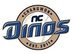

공식 명칭은 (주)엔씨다이노스프로야구단이다. 온라인게임업체 (주)엔씨소프트가 창단한 한국 프로야구 9번째 구단으로서 2010년 12월 한국야구위원회(KBO)에 창단 의향서를 제출한 데 이어 2011년 1월 창단 신청서를 공식 제출하였다. 2011년 2월 8일 KBO 이사회에서 엔씨소프트를 제9구단 창단 우선협상 대상자로 선정하였고, 같은 해 3월 31일 공식 창단 승인식을 열었다. 이로써 NC다이노스는 1991년 쌍방울 레이더스 창단 이후 20년 만에 기존 구단의 연고지나 선수들을 승계하지 않고 새로 탄생한 구단이 되었다.
